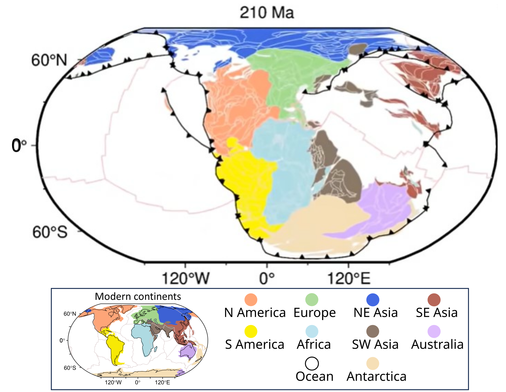

From: Cao et al. (2024) Earth’s tectonic and plate boundary evolution over 1.8 billion years. Geoscience Frontiers. doi: https://doi.org/10.1016/j.gsf.2024.101922 and accompanying animation.

Timeline of the Human Condition